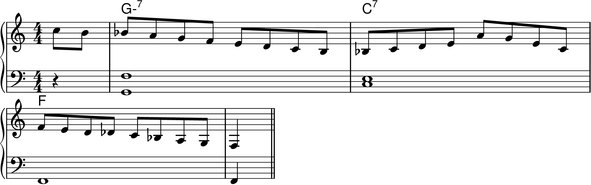
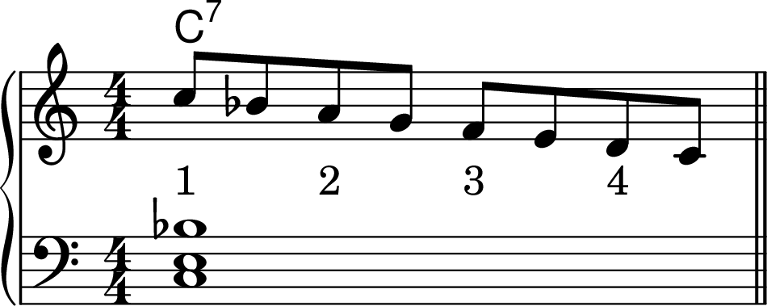
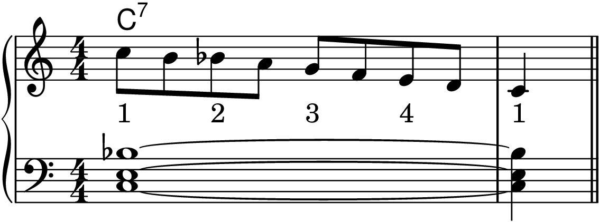
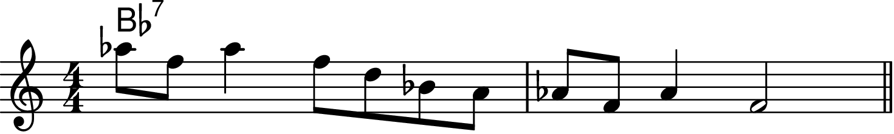
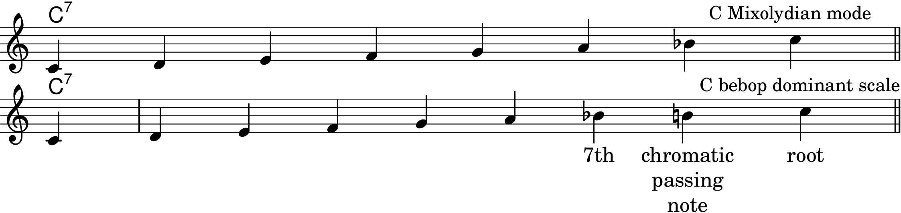
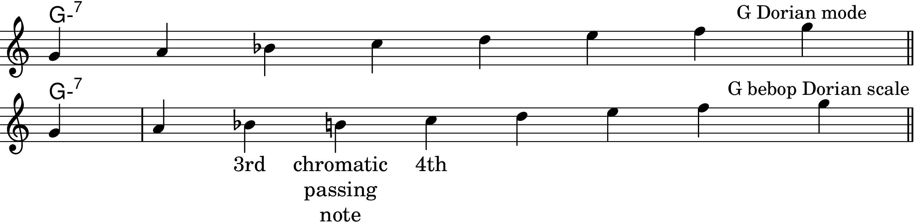
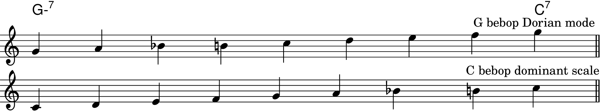
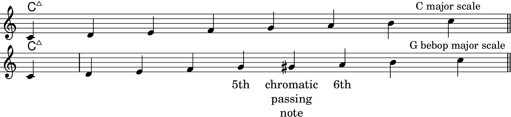
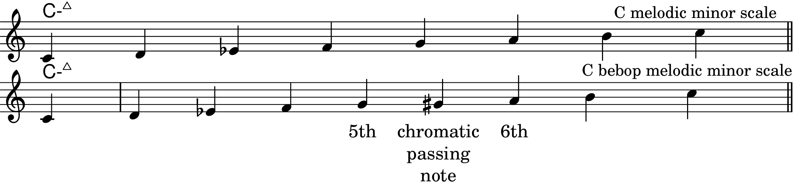

Chapter 7: The Bebop Scales
Figure 7-1

Figure 7-2

Figure 7-3

Figure 7-4

The Bebop Dominant Scale
Figure 7-5

The Bebop Dorian Scale
Figure 7-6

Figure 7-7

The Bebop Major Scale
Figure 7-8

The Bebop Melodic Minor Scale
Figure 7-9

Bebop Scale Licks
Piano and Arranging Stuff